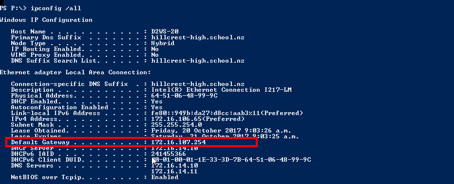
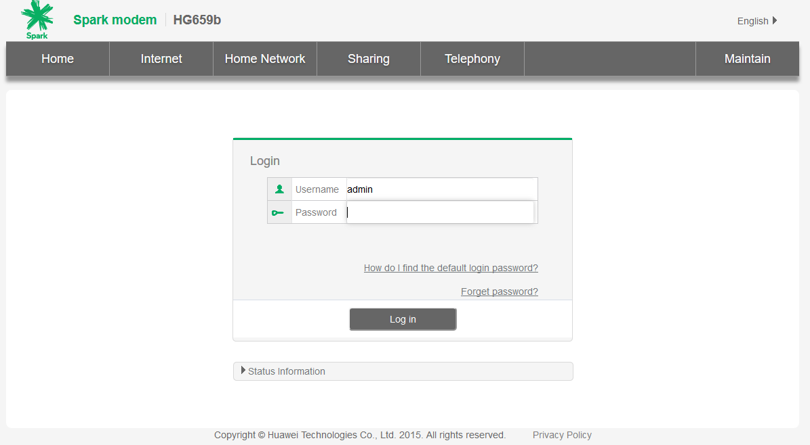
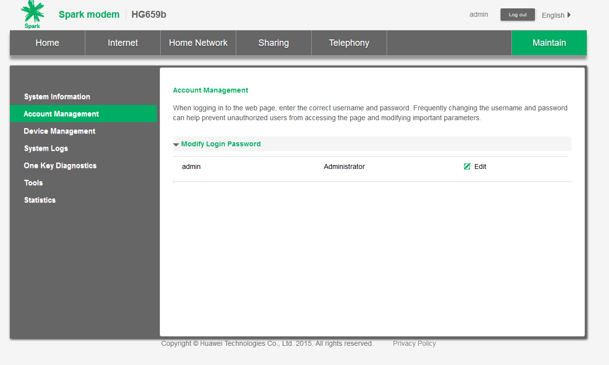
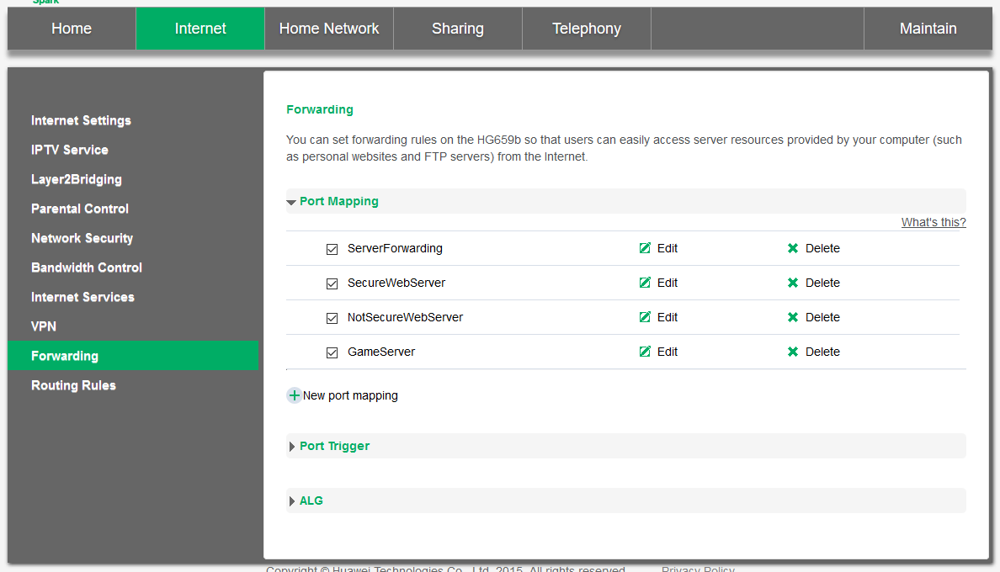
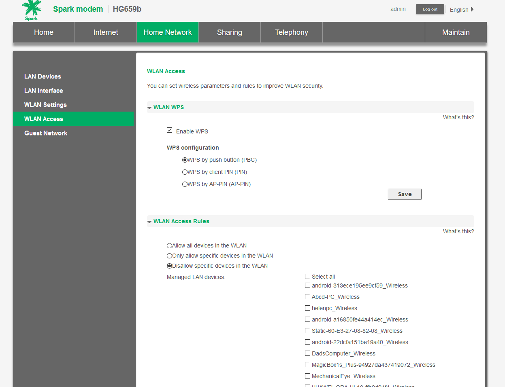
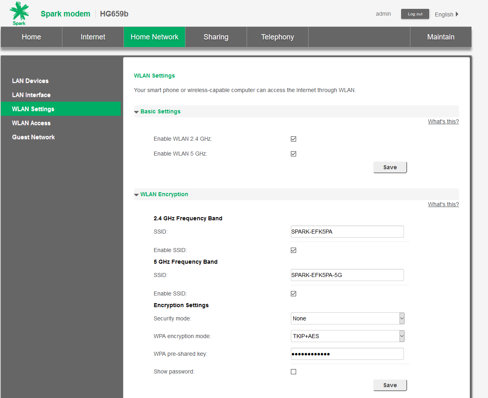
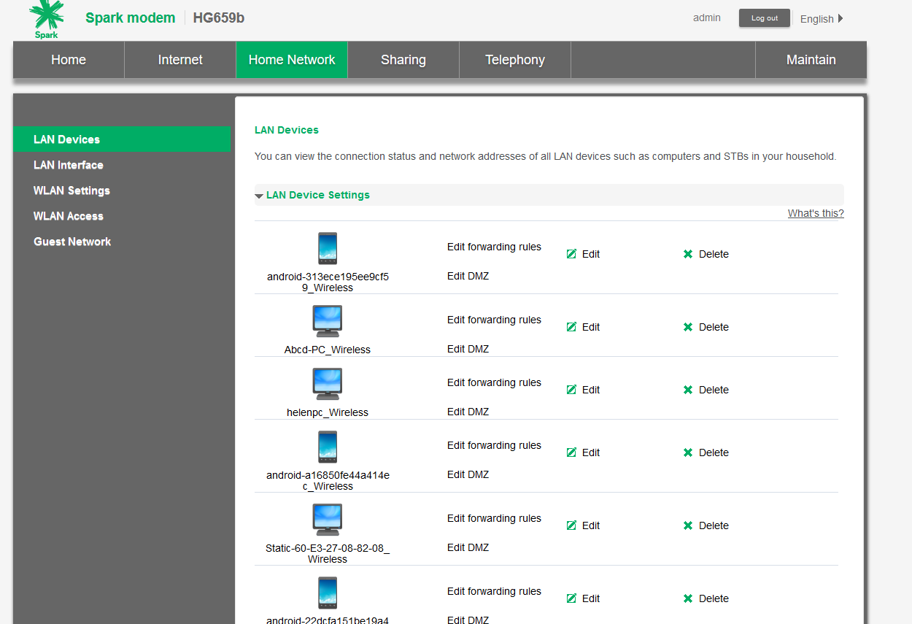

To configure your router, first get onto the login page (google your model number to find the default ip address, or type ipconfig into your console and find the default
gateway entry ), the most common addresses are 192.168.0.1, 192.168.1.254, 192.168.1.1...etc.

Once on the login page, the consult google for the default username and password for your route.
Common username and passwords could be:
| Username |
Password |
| admin |
admin |
| admin |
password |
| admin |
default |
| default |
default |


Once logged in, the first thing you want to do is to change the default password to something more secure, to do this consult google again, in my case it is under the
Maintain → Account Management → Modify Login Password.

A common router setting to config would be the port forwarding settings, which for my router is under Internet → Forwarding → Port mapping, yours might differ. For my
router the port mapping, specific MAC addresses are used for directing traffic, although another router might use private ip addresses.
You can secure your wireless internet by either setting a password, or by allowing or blocking specific devices by mac address.


The router can also list individual devices that ever connected to the router:
